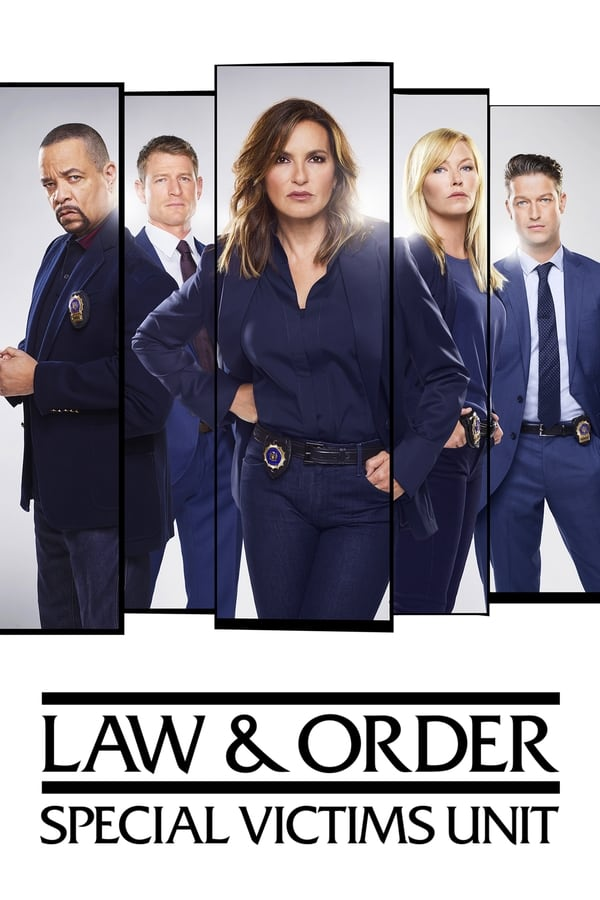
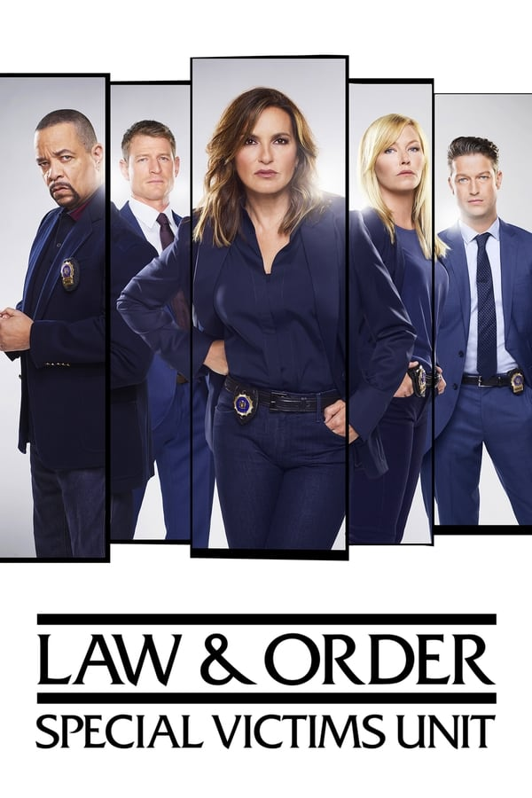

Cumpleaños: Aug 21, 1984
Lugar de Nacimiento: Norwalk, Connecticut, Estados Unidos
Película mejor valorada: Tick Tick Boom
Robin de Jesús (Norwalk, Connecticut, 21 de agosto de 1984) es un actor estadounidense de cine y teatro de ascendencia puertorriqueña. El primer papel importante de Robin de Jesús fue como Michael, en la película independiente Camp (2003), donde interpreta a un adolescente gay que recibe una paliza por usar un vestido de mujer para su fiesta de graduación. Si bien la película, que también protagonizó una joven Anna Kendrick, pasó relativamente desapercibida para la corriente dominante, luego ella ganó un seguimiento de culto entre los fanáticos del teatro musical para adolescentes, pues conecta a los jóvenes por el tema de quienes son rechazados por ser diferentes. Quizás de Jesús sea más conocido por interpretar el papel de Sonny en el musical de Broadway In the Heights de 2008, por el cual recibió una nominación al premio Tony al mejor actor principal en un musical. En 2010, se unió al elenco de La Cage aux Folles (la jaula de las locas) como Jacob, el atrevido amo de llaves, lo que le valió su segunda nominación al premio Tony, en la categoría actor principal. La producción se estrenó en el Teatro Longacre el 18 de abril de 2010. De Jesús dejó la producción el 13 de febrero de 2011, reemplazado por el conocido actor Wilson Jermaine Heredia. De Jesús interpretó el papel de Boq en la producción de Broadway Wicked en el Teatro Gershwin. En 2019, recibió una tercera nominación al Premio Tony, como mejor actor principal de una obra, por su papel de Emory en The Boys in the Band.
 
